What I see different — plain English
- Primary CTA buttons are the wrong color on live. "Book a testing review" (hero and closing band) renders a darker teal on live (~
#0F6F8A) but the brief / preview specifies a lighter cyan (#62BBCB). Affects both primary CTAs. - The whole homepage is too tall on live. Live runs ~900–1350 px taller than preview at every viewport — the extra height comes from inter-section gaps (notably between the logo bar and "What we ship", and around the heal-flow band). The page feels noticeably "looser" than the canonical reference.
- Hero H1 wraps differently between live and preview at 1280 and 375. One line on each side breaks at a different word — minor, font-metric driven, not a structural fix.
- "Built for the whole Drupal team." H2 wraps differently at 375 — same root cause as the hero H1 wrap.
- At 375 the heal-flow diagram differs. Live shows only node 01 in the container with horizontal scroll available for nodes 02–04 (this is the brief-specified behavior). Preview shrinks the whole 4-node SVG to fit. Live is correct; the preview is stale.
- Everything else matches. Header (post-8.1), logo bar 3×2 at 375 (post-8.3), feature-card 3/1/1 grid (post-8.4), FAQ accordion, and footer all match preview cleanly.
CTA color resolution (specifically in scope)
Pixel-sampled the centre of the primary CTA at 1280 on both live and preview captures.
Live —
srgb(15,111,138) = #0F6F8A
No match to brief tokens (
--primary #1893B4, --primary-light #62BBCB, --primary-deep #005AA0).
Preview —
srgb(98,187,203) = #62BBCB
Matches
--primary-light exactly (the preview's bound token at line 110 of homepage.html).Closing CTA renders the same wrong shade on live (visually confirmed in the composite). Verdict: real delta. Binding REWORK item. Single-token fix likely resolves both CTAs.
Per-viewport comparators
1280×800 — drag slider to wipe live over preview

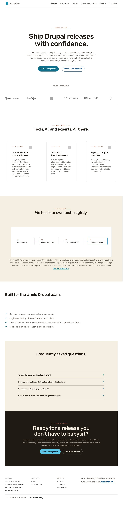
LIVE PREVIEWDiff PNG (red highlights deltas, normalized to preview height 4341 px)
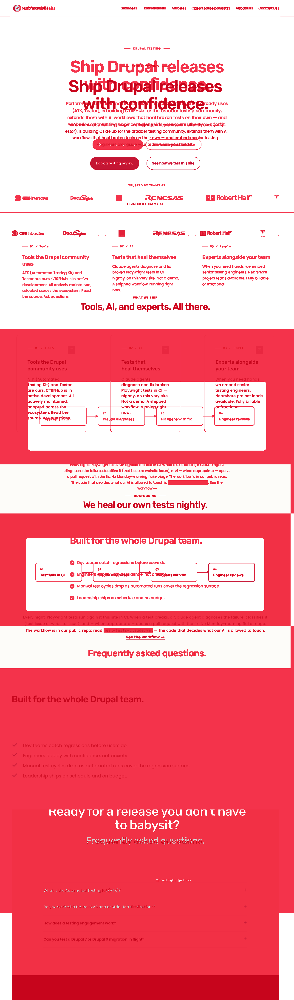
Side-by-side composite (live | preview)
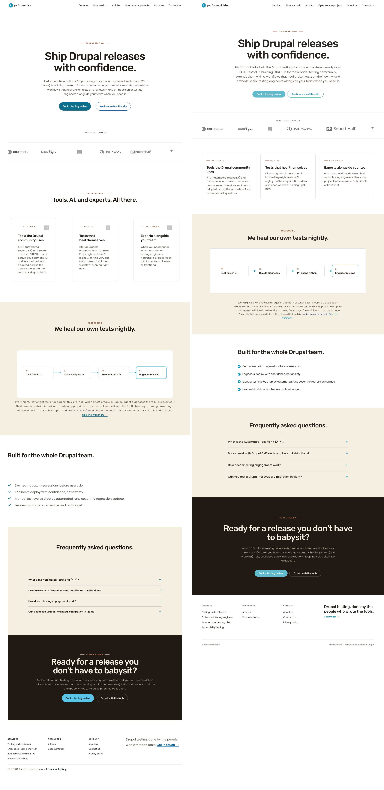
AE 2,786,900 / 5,556,480 common pixels = 50.2%. Inflated by vertical cascade.
375×667 — drag slider to wipe live over preview
 LIVE
PREVIEW
LIVE
PREVIEW
Diff PNG (red highlights deltas, normalized to preview height 6163 px)
Side-by-side composite (live | preview)
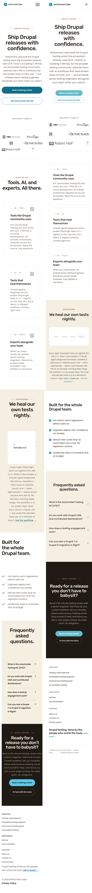
AE 1,256,820 / 2,311,125 common pixels = 54.4%.
Per-section verdict table (binding evidence)
| # | Section | Status | What's different | Diff crop (1280) |
|---|---|---|---|---|
| 1 | Header | match | Pill removed, height ≈ 73 px, six nav items, logo P-icon. 8.1 holds. | |
| 2 | Hero band | rework | Primary CTA wrong color (#0F6F8A live vs #62BBCB preview). H1 wrap differs at 1280 and 375 (minor). |
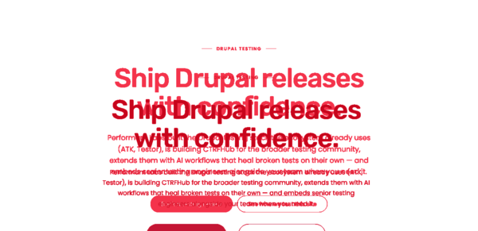 |
| 3 | Logo bar | match | 3×2 grid at 375 verified by tight crop. 8.3 holds at all viewports. | 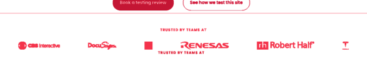 |
| 4 | Feature cards | delta | 3/1/1 progression intact (post-8.4). Diff shows positional offset due to extra whitespace above this band on live. | 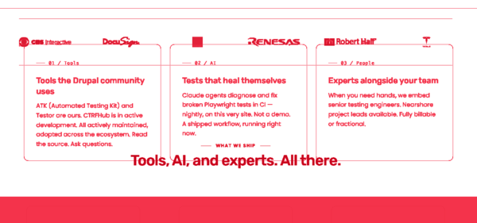 |
| 5 | Heal-flow | delta | At 375 live shows brief-correct horizontal scroll (node 01 visible, 02–04 off-screen); preview shrinks SVG to fit. Live is right; preview is stale. Not a regression. | 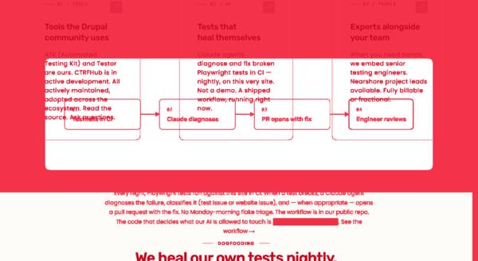 |
| 6 | Built-for checklist | delta | Content matches; H2 wraps differently at 375 (minor, font-metric driven). | 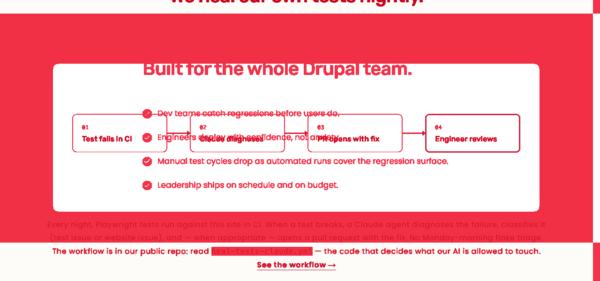 |
| 7 | FAQ accordion | match | Four collapsed items, accent + markers, headings align. |
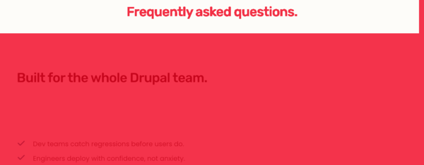 |
| 8 | Footer-CTA | rework | Same primary-CTA color issue (#0F6F8A vs #62BBCB). Espresso band, copy, H2, secondary "Or test with the tools" pill all match. |
|
| 9 | Footer | match | Three columns + signature column, copyright, Privacy Policy link. | 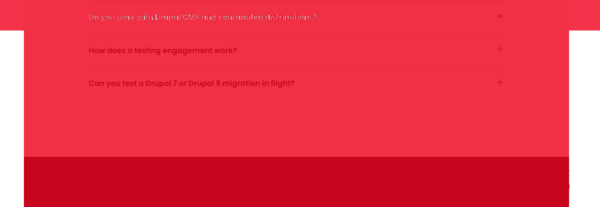 |
All diff crops are from the 1280 normalized diff. Red regions indicate pixel-level deltas. Position offsets caused by the cumulative vertical-padding excess on live show up as red bands at every section boundary — that's the section-padding REWORK item, not a section-specific structural fix.
Sub-issue recommendations (REWORK)
-
Primary CTA background color fix — proposed branch
aa/pl-homepage-phase-8.7-cta-color.
Problem:.btn--primaryrenders#0F6F8Aon live; should be#62BBCB(the brief / preview's--primary-light). Affects hero and closing primary CTAs.
Operator decision needed before F starts: Is--primary-light #62BBCBthe right canonical primary-CTA token, or do we update the brief to a deeper teal? (Recommend: keep the brief, fix the theme.) -
Inter-section vertical padding tightening — proposed branch
aa/pl-homepage-phase-8.8-section-padding.
Problem: live is 900–1350 px taller than preview across viewports. Concentrated in logo-bar → "What we ship", feature cards → heal-flow, and heal-flow → built-for gaps. Likely one shared section-padding token over-set in the theme.
Acceptance: at 1280, live total page height within ±200 px of preview's 4341 px.
Operator decision needed: none expected — straight token tightening. -
(Optional, not blocking activation) Preview heal-flow update for mobile — doc-only.
Updatedocs/pl2/Previews/homepage.htmlto render the heal-flow SVG with brief-correct horizontal scroll at 375 (matching live behavior). Currently the preview shrinks-to-fit, which is the stale specimen.